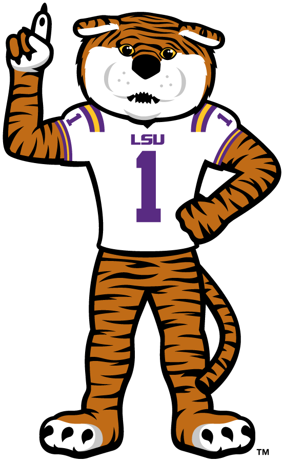

Hello, I'm
James (Mason) Pastorek
A passionate Mechanical & Software Engineering Student.
About Me
I am a software engineering student at Louisiana State University, with a keen interest in mechanical engineering as well. My journey into the world of technology began with a fascination for how things work, from the intricate gears of a machine to the complex logic of a software application.
I am a proud alumnus of Catholic High School of Baton Rouge, where I first developed my problem-solving skills and a strong work ethic. I am passionate about creating clean, efficient, and user-friendly web applications.

My Interests

Software Engineering
Building elegant and efficient software solutions.

Mechanical Engineering
Designing and analyzing physical systems and machines.
Oil Industry
My career aspirations are focused on the oil and gas sector.